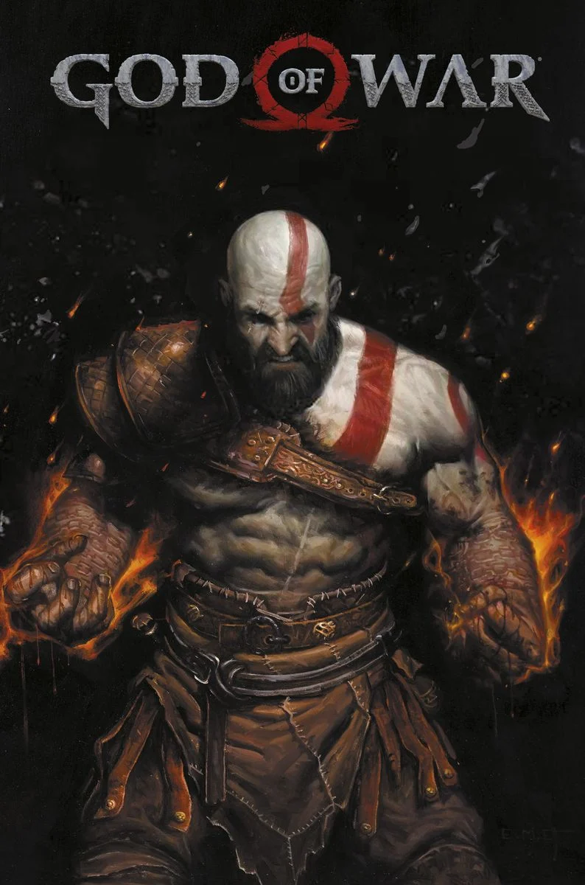

Party Animals
Sale -40%
Party Animals is a physics-based competitive brawler game where players play as various animals including puppies, kittens, ducks, bunnies, sharks, dinosaurs and even unicorns. Animals can punch, toss, jump, kick, and headbutt each other. They are also able to pick up an assortment of weapons. Upon taking a certain amount of damage, players are temporarily knocked out. In most cases, they recover and return to the fight, unless they are tossed off the map or into various hazards.

Killer Instinct
Sale -15%
Killer Instinct is a series of fighting video games created by the British studio Rare , being their first project in this genre. Its first game was distributed by Midway and programmed by Rare in 1994. The game stood out for having exceptional quality, completely different from what was seen in similar contemporary games such as Street Fighter II , Mortal Kombat II or The King of Fighters '94 , implementing a unique and striking combo system and modern graphics, being one of the pioneers in the technology that would later be called 2.5D. In the same year,
GTA 5
Sale -50%
Grand Theft Auto V (abbreviated as GTA V or GTA 5 ) is an- world action-adventure video game developed by Rockstar North and published by Rockstar Games . This revolutionary title made its debut on September 17, 2013, on the Xbox 360 and PlayStation 3 consoles . It later experienced a comeback on November 18, 2014, on the next-generation consoles, Xbox One and PlayStation 4 , with a first-person perspective .

God Of WAR
Sale-20%
God of War Ragnarök is a third-person action-adventure hack and slash video game developed by Santa Monica Studio and published by Sony Interactive Entertainment . It was released worldwide on November 9, 2022, for the PlayStation 4 and PlayStation 5 , marking the first cross-generation release in the series. It is the ninth installment in the God of War saga , the ninth chronologically, and the sequel to 2018's God of War.
Counter Strike 2
722 mil Players
Counter-Strike (also known as Counter Strike 1.6 to differentiate it from later titles) is a free-to-play multiplayer ( LAN or online ) first-person shooter video game developed by Valve for Microsoft Windows . It is a complete modification of the game Half-Life , made by Minh Le and Jess Cliffe , who released the first version on June 18, 1999.
Minecraft
712 mil Playes
Minecraft is an open-world , sandbox, and othervideo game developed and developed by Swedish developer Markus Persson (known as "Notch") and later by Mojang Studios (now part of Microsoft ).It is developed in the Java programming language for the Java Edition versionand later in C++ for the Bedrock Edition version . It was released on May 17 , 2009, and after numerous changes, its first stable version 1.0 was released on November 18, 2011.
TF2
532 Mil Players
Team Fortress 2 (TF2) is a multiplayer first-person shooter game developed and published by Valve Corporation in 2007. It is the sequel to the 1996 Team Fortress mod for Quake and its 1999 remake, Team Fortress Classic. The game was released in October 2007 as part of The Orange Box for Microsoft Windows and the Xbox 360, and was ported to the PlayStation 3 in December 2007.[1][2] It was released as a standalone game for Windows in April 2008, and updated to support macOS in June 2010 and Linux in February 2013. It was made free-to-play in June 2011, and is distributed online through Valve's digital retailer, Steam.
DB Sparking Zero
160 Mil Players
Dragon Ball: Sparking! Zero[1] is a 2024 fighting game developed by Spike Chunsoft and published by Bandai Namco Entertainment. Based on the Dragon Ball franchise created by Akira Toriyama, it is the fourth main installment in the Budokai Tenkaichi series, a sequel to Dragon Ball Z: Budokai Tenkaichi 3 (2007), and the first to be released under the original Sparking! title outside of Japan.
Sparking! Zero was released for PlayStation 5, Xbox Series X/S and Windows on October 11, 2024. It received generally positive reviews from critics and became a massive commercial success for Bandai Namco.